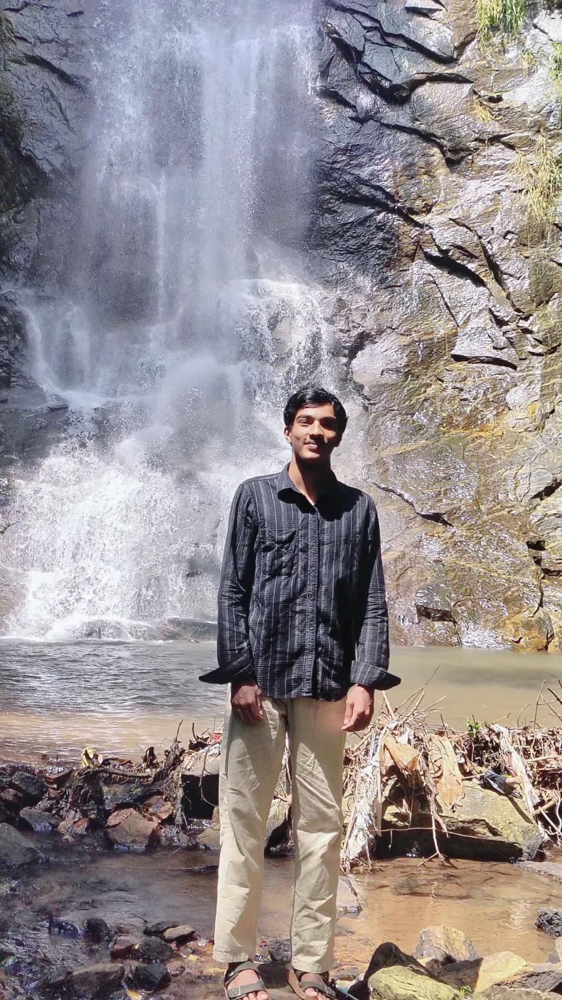

I am a Computer Science Engineering student passionate about software development, web technologies, artificial intelligence, and problem solving. I enjoy building innovative applications and continuously improving my technical skills through projects, workshops, and internships.
To secure a challenging position in the field of Computer Science and Software Development where I can apply my technical knowledge, enhance my skills, and contribute effectively to organizational growth while continuously learning emerging technologies.
Rajadhani Institute of Engineering and technology
Currently Pursuing
Organization: Filmroll VFX Academy
Successfully completed an internship in Web Development and Designing, gaining hands-on experience in responsive website development, UI design, and modern web technologies.
Email : muhammedfarooq7592@gmail.com
Phone : +91 7592830266
Location : Kollam,Kerala, India
GitHub : github.com/farooqq/
LinkedIn : linkedin.com/in/yourusername